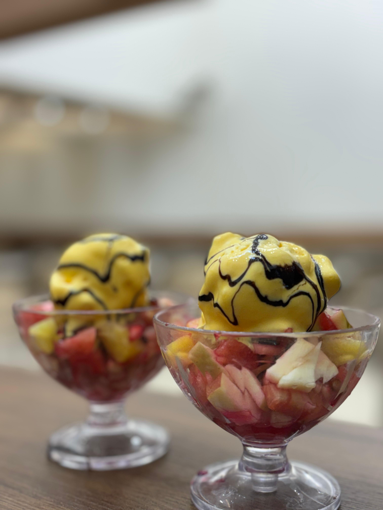
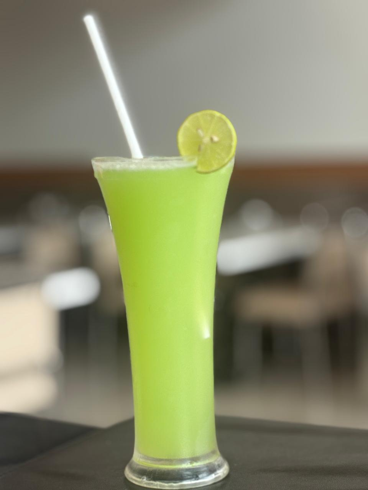

They say breakfast is the most important meal of the day, and at Mathuram Cafe, we take that very seriously. If you are searching for the best breakfast in Brahmavara, look no further. Conveniently situated Opposite Krishi Kendra, we open our doors early to serve you fresh, piping hot, and nutritious morning meals.

Fresh, Hot, and Wholesome
A good breakfast should energize you for the day ahead. Our morning kitchen is a hub of activity, grinding fresh batters and preparing aromatic chutneys. We specialize in classic South Indian breakfast items that are light on the stomach yet incredibly satisfying.
Start your morning with our pillowy-soft Idlis, which pair perfectly with our mildly spiced sambar and fresh coconut chutney. If you prefer a bit of crunch, our Medu Vadas are fried to a golden crispness, offering the perfect textural contrast.
The Dosa Experience
Breakfast at Mathuram Cafe is synonymous with dosas. Our Dosa menu features everything from the humble Plain Dosa to the rich and flavorful Masala Dosa, packed with a perfectly seasoned potato filling. Each dosa is made to order, ensuring it reaches your table hot and crispy.

Quick Service for Busy Mornings
We know that mornings can be rushed. Whether you are heading to work or starting a long journey, our efficient staff ensures quick service without compromising on quality. For the ultimate convenience, you can even use our Drive-Thru facility to grab a delicious breakfast on the go.
The Perfect Cup of Coffee
No Brahmavara breakfast is complete without a strong cup of filter coffee. Our coffee is brewed fresh continuously throughout the morning. The rich aroma of chicory and coffee beans is exactly what you need to awaken your senses.
Join the locals who have made Mathuram Cafe their daily morning ritual. Experience the best breakfast in Brahmavara and kickstart your day with authentic flavors and warm hospitality.
Check out our full breakfast offerings and visit us tomorrow morning!